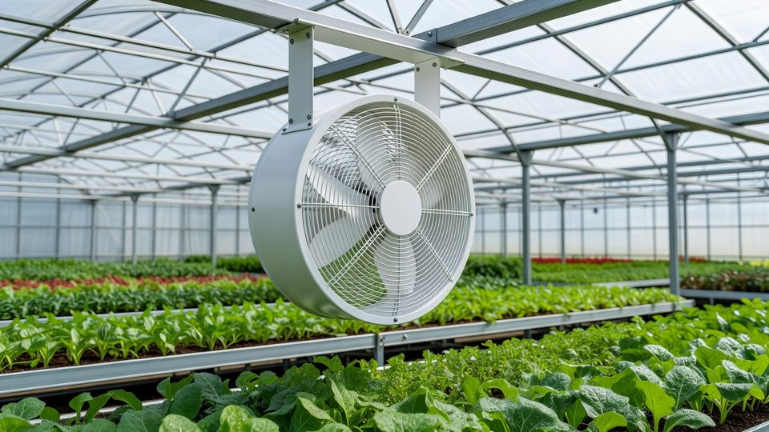
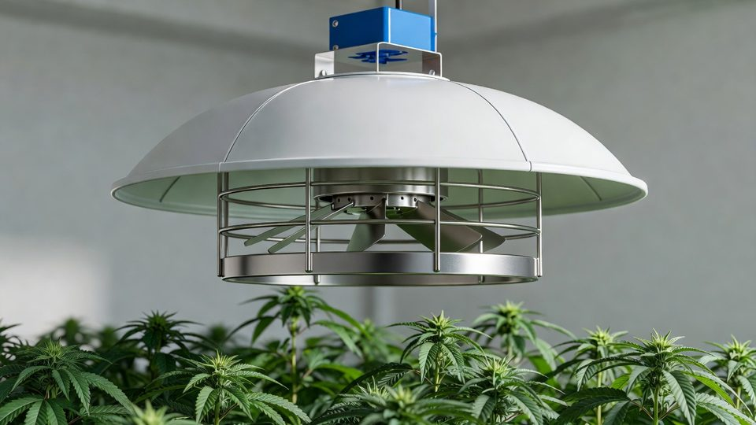
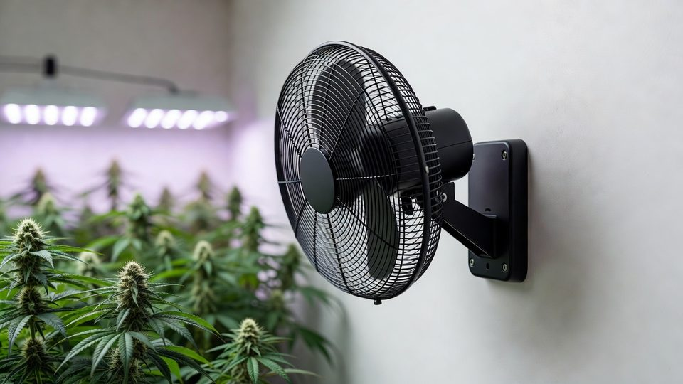
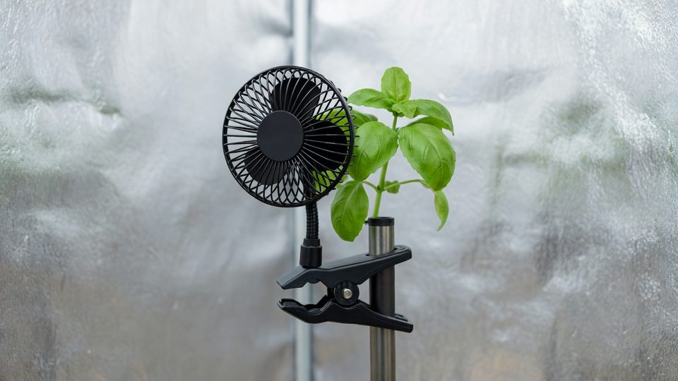
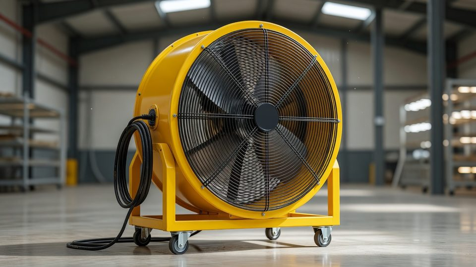
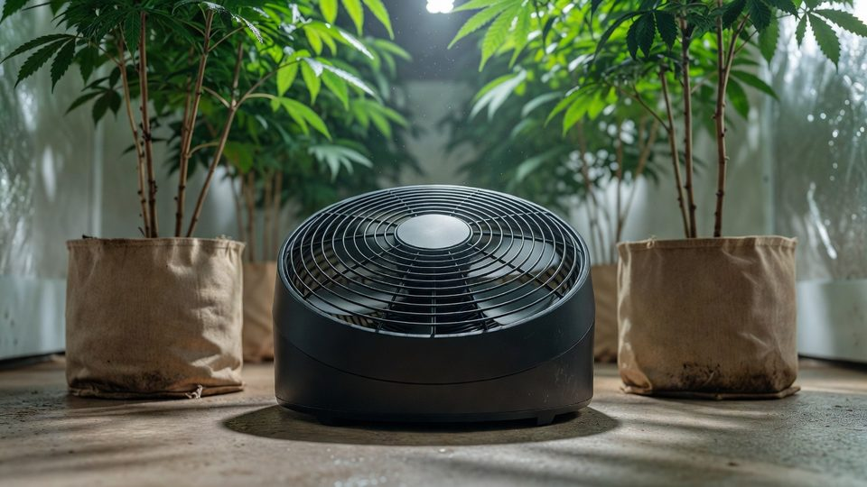
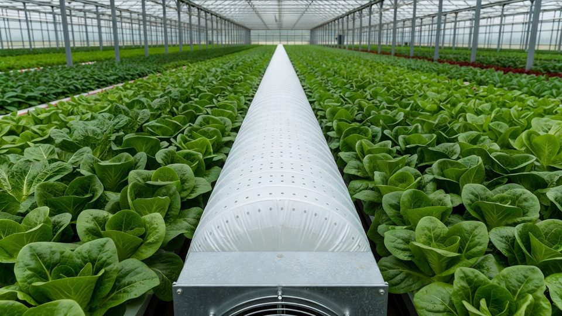
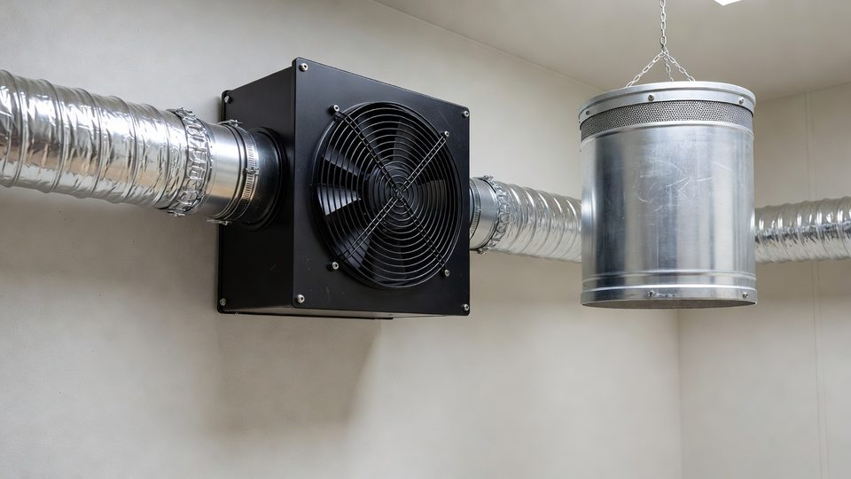

Airflow design for indoor cultivation
Every leaf sits inside a film of still air that limits how fast it can breathe. Airflow strips that film away. Done right it feeds the plant and dries the room. Done wrong it scorches leaves or breeds rot.
Purpose and scope
Airflow is plumbing for gases, and it is as important as light and feed. Without moving air, even a perfect light and a perfect feed cannot reach the leaf properly. A still, humid canopy is exactly where bud rot begins.
This guide explains, from zero, what air movement does at the leaf, how much you want, which fans actually make that air, how to rank them, and where to hang them.
Definitions
Evidence and limitations
We've gone to great lengths to keep these guides honest. One of the main ways we do that is self-review: we actively look for claims that are subjective, only lightly backed by literature, or based on grower practice rather than a controlled study — and we call those out instead of dressing them up as settled science.
Often there simply is no paper for the decision you're making. In those cases we're drawing on what other growers report and what has worked in our own rooms. That can still be useful — but it is not a lab proof. Do what works for your plants, your room, and your meters. If a table disagrees with your crop, believe the crop and log the difference.
- Boundary-layer thinning improves gas exchange; still air holds humidity at the leaf
- Mechanical flexure (thigmomorphogenesis) can affect stem strength
- ~0.3–1.0 m/s canopy flutter bands and HAF layout habits
- Hard disease/stress velocity cliffs without measurement height defined
See something glaringly wrong? Tell us and we'll fix it. Please open a GitHub issue with the paper name and what looks off (include a source if you have one): Report an accuracy issue. Local law, labels, and licences always override any recipe here. Inline notes labelled grain of salt flag the highest-risk over-trust points in the text.
Leaf boundary layers
Air right against a leaf barely moves. It forms a stagnant film called the boundary layer. CO2 going in, and water vapour and heat coming out, all have to crawl across that film by slow diffusion. The thicker it is, the more it slows the leaf[1].
Moving air thins that film. Even small breezes make a real difference: gentle wind (under ~0.2 m/s added) has been shown to lift daytime photosynthesis by 10–20%[2]. This is the reason fans belong in a grow room.
Airflow targets
More airflow helps, but with sharply diminishing returns. Photosynthesis climbs steeply as you go from dead-still up to a gentle breeze, then flattens out. Most of the benefit is won by the time leaves are gently fluttering[3].
Matching airflow to light intensity
The brighter the room, the more the leaf needs air. High light drives high photosynthesis and high transpiration, and both depend on the boundary layer staying thin. Cannabis yield keeps rising with light to very high levels[5], but only if airflow and climate scale with it. A bright room with weak airflow wastes the light.
Light, CO2, temperature, humidity and airflow work together (see the systems guide). Turning up the light without turning up the air leaves hot leaves sitting in their own humid film[9].
Airflow, transpiration and nutrient demand
Thinning the boundary layer feeds CO2 in and pulls water out faster. More airflow means more transpiration, which means the plant needs more water and nutrient at the roots. There are two beginner gotchas here:
- Calcium tip-burn. Calcium rides into the leaf on the transpiration stream, so uptake tracks water flow[7]. Crank the airflow and under-feed, and you get calcium-deficiency tip-burn even with plenty in the tank. Fix: feed to match the airflow, not the other way round.
- Sturdier plants (a good thing). Air movement is a mechanical signal. Plants that feel a breeze grow shorter, thicker, stronger stems, an effect called thigmomorphogenesis[8]. A well-aired plant holds heavy colas without staking.
Tip-burn cuts both ways, and the direction depends on where the still air is. Too much airflow with too little feed starves the leaf of calcium. But so does a dead-still pocket buried inside a dense canopy, because the leaves in there cannot transpire at all, so no calcium arrives. In lettuce, this is the classic result: blowing air directly into the inner leaves raises their calcium and largely stops tip-burn[13]. That is the single best argument for the top-down fans in section 10.
Airflow system functions and equipment
“Add a fan” hides three separate jobs. Buying the wrong one for the job you actually have is the most common airflow mistake in a first room:
Move the air that is already in the room so every leaf gets a gentle breeze and no humid dead-zones form. This is the boundary-layer job[6], and it is what most of this paper is about.
Swap stale, humid, CO2-depleted room air for fresh air, or push it through a carbon filter. Inline duct fans and wall exhausts. This removes water; it does almost nothing for the leaf.
An air conditioner, dehumidifier or air-handling unit changes the air's temperature and moisture. It has to deliver that treated air somewhere, which is a distribution problem of its own.
Air takes the easy path and skips corners, the lower canopy, and the inside of dense plants. Those still, humid pockets are where bud rot starts. Place fans to push air through the canopy, not just over the top of it, and defoliate enough to let air in.
Turbulent airflow and canopy mixing
Aiming one big fan straight down a row is tempting. Don't. A smooth, laminar jet builds its own thick boundary layer on whatever it hits, and leaves everything off-axis still. Turbulent, mixing air, from many fans at varied angles with oscillation, constantly disturbs the film on every leaf from every direction, which is exactly what thins it best[1][2].
Walk the room. Every leaf, top to bottom and inside the plants, should be gently moving. Still leaves anywhere = a pocket you need to reach. A leaf that is flapping hard = back that fan off.
Evidence from controlled room trials
Everything above is leaf physiology. Does it actually move yield in a real flower room? A controlled trial by Pipp Horticulture with Dr. Allison Justice and the Cannabis Research Coalition tested exactly that: three identical flower rooms with VPD, temperature and humidity held constant, changing only the airflow[10].
The rooms ran at different delivered air speeds, measured in feet per minute (FPM), the standard unit for room airflow. They compared near-still air against roughly 100, 200 and 400 FPM (about 0.5, 1.0 and 2.0 m/s). One clean result fell out:
That looks like it fights the leaf-level plateau in Figure 2, but it does not. Figure 2 is the speed at a single leaf; FPM here is what the whole room delivers. Air slows as it pushes into the canopy, so a room has to move well over 1 m/s at the fans before the buried lower and interior leaves feel the gentle breeze Figure 3 asks for. Roughly 200 FPM delivered is about what it takes to land every leaf in the sweet spot, not just the ones on the outside.
Above that threshold, the higher-airflow rooms showed three things:
- More sellable flower. Stems carried less biomass and more of the plant's energy went into bud. Trim ran about 42% in the still-air plants and was significantly lower with good airflow, so less of the harvest ended up as larf[10].
- Less stress. Still-air plants had redder stems and more anthocyanin, a visible stress marker; the well-aired plants looked more uniform and less stressed.
- Taller, not weaker. Higher-airflow plants finished roughly 6 inches taller than the still-air controls, with most vertical growth done by the end of week three, while still putting less into stem. Here the extra height is relief from still-air stress, not the mechanical dwarfing you would get under a harder, direct wind (see section 06).
Even in a tightly engineered room, the crew saw a positional bias: the first 1–2 feet of each row behaved differently from the rest. Their takeaway is the one to keep, “if airflow isn’t uniform, neither is your crop.” That is the dead-zone problem from section 07, now measured. Making sure no leaf is left in still air beats chasing a high average fan speed.
Treat it as strong early field evidence, not settled science: the results so far are one replicate, with a second run underway to firm up the statistics[10]. The direction lines up cleanly with the leaf physiology in the rest of this paper.
Fan types
Fans are not interchangeable. Each type makes a different shape of air, and the shape decides which leaves get served. Pick by the shape you need, not by the price tag or the CFM on the box.








A hanging basket fan, typically a 300–500 mm (12–20 inch) blade on a small 1/10–1/15 hp motor, hung above head height and aimed sideways down the room[11]. Several of them together drive one slow racetrack loop: air runs down one side of the room and back the other. Its jet drags surrounding still air along with it (entrainment), so a modest fan stirs a large volume.
Where: above the canopy, a quarter of the room width in from the wall. The catch: its air runs over the top of the crop. In a dense canopy it never reaches the middle.
Hangs above the canopy and blows straight down through it, usually with a flared diffuser on top so it draws air from a wide area and delivers a broad column rather than a narrow jet. This is the one type that reliably reaches leaves buried inside a plant.
Where: over the canopy on a grid, spacing set so the down-columns overlap. The catch: more expensive per unit, and it casts shade, so mind where you hang it relative to the lights.
The classic grow-room fan: a head on a bracket that sweeps an arc. Cheap, everywhere, and genuinely good in a small room, because the sweep gives you the varied, turbulent air section 08 asks for.
Where: wall or pole mounted, aimed to mix the room, never pointed straight at plants. The catch: it time-shares. Each leaf only gets air for part of each sweep, so at scale you need a lot of them to hold a constant breeze.
A miniature oscillating fan on a clamp, gripping a tent pole or frame. Moves roughly one plant's worth of air.
Where: tents and single-plant setups only. The catch: nothing about it scales. If you are running more than about 2 m² of canopy, clip fans are a false economy: you end up with six of them doing the job of one proper hanging fan, at higher total wattage and worse uniformity.
A large, powerful head on a stand. Very high thrust, a narrow jet, and a lot of noise. This is a blunt instrument.
Where: temporarily, to break a specific dead corner or dry a room down fast after a spill. The catch: it is the single most common cause of wind-burn. Plants directly in front get a gale and everything off-axis gets nothing. Do not build a room's airflow on these.
A low, flat, wide fan that sits at pot level and blows across the floor and up into the bottom of the plants. The zone it serves is the wettest and stillest in the room: cool air sinks, pots and floors evaporate into it, and no overhead fan reaches it.
Where: at floor or bench level, blowing along the rows. The catch: almost none, which is why it is such good value. Just keep it out of the way of irrigation lines and keep the intake clear of leaf litter.
A long fabric or polythene tube, fed by a fan or an air handler, that leaks air through hundreds of small holes along its whole length. Because the holes are small and numerous, delivery is remarkably even and there is no single blast anywhere. Research design targets sit around 6–10 mm holes at 30–70 mm spacing, with the fan holding roughly 30–40 Pa of static pressure so the tube stays inflated and round[16].
Where: running the length of a row, over or under the bench. It is the standard way to deliver conditioned air from an AC or dehumidifier without creating a draught in one corner and a dead zone in the other. The catch: you have to design it (tube diameter, hole size, hole spacing) and it needs a fan that can actually make the pressure.
A fan inside a length of ducting. This is an exchange device, not a circulation device: it pulls air out of the room, usually through a carbon filter, and dumps it outside. It is what controls humidity and refreshes CO2 in a vented room.
Where: ducted to a high point in the room (hot, humid air rises), with a passive or active intake low down. The catch: people count it as their airflow. It is not. A room with a big extractor and no circulation fans still has a still, humid canopy.
Three more you will meet in bigger rooms, listed here so you can place them correctly rather than mistake them for canopy airflow:
A large, very slow ceiling fan. Its job is to break the warm layer that collects near the ceiling under lights and push it back down. Useful in tall rooms; pointless under a 2.4 m ceiling.
Bulk air exchange for greenhouses and large rooms, with gravity or motorised shutters. Same class as the inline duct fan, just much bigger. Sealed rooms usually do not have one.
The air-handling unit that actually heats, cools and dries. It sets your VPD. It still needs a distribution method, typically ducting into socks, to get that treated air evenly across a canopy.
If you grow on multi-tier racking, none of the above works on its own: each tier is a low, enclosed slot that overhead fans physically cannot reach. Purpose-built systems mount a ducted fan bar into the racking itself and push air along or down through every tier[18]. On racking it is the only thing that works, and it is the setup the Pipp trial in section 09 was built to test.
Selecting fans for canopy airflow
A ranking is only honest if you say what it is ranking for. This one scores crop-relevant airflow bought per dollar installed, in a sealed, single-tier indoor flower room of roughly 20–200 m² of canopy. Change the room and the order changes; the callout below says how.
| # | Fan type | What it buys you | Reach into the canopy | Verdict |
|---|---|---|---|---|
| 1 | HAF fan | A room-wide loop, running 24/7 on very few watts | Over the top only | Build the room on these. Cheapest uniformity you can buy[11] |
| 2 | Under-canopy fan | Kills the wettest, stillest zone in the room | Bottom of the plant | Best value add-on. Targets exactly where bud rot starts |
| 3 | VAF fan | Air driven down into the middle of the plant | Full depth. The only one that gets there | Buy once density rises. Peer-reviewed for interior-leaf calcium[13][15] |
| 4 | Oscillating wall fan | Cheap, varied, turbulent air | Over and around, in bursts | Fine as the backbone below ~20 m². Falls behind above it |
| 5 | Air sock off the AHU | Even delivery of conditioned air, no draughts | Along the row, gentle | Excellent, but it is capex plus design work[16] |
| 6 | HVLS / destratification | Breaks the hot layer under the ceiling | Bulk mixing only | Only pays in tall rooms. Wasted under a low ceiling |
| 7 | Drum / pedestal fan | Raw thrust into one spot | A gale on-axis, nothing off it | Spot-fix only. Leading cause of wind-burn |
| 8 | Clip fan | One plant's worth of air | One plant | Tents only. Six of these lose to one hanging fan |
| Ranked on value per dollar for a sealed, single-tier indoor flower room. Exchange kit (inline duct and wall fans) is deliberately absent: it is mandatory, but it does a different job and cannot be traded against a circulation fan. | ||||
- Vertical racking: in-rack systems move to #1 outright and HAF drops off the list. Overhead fans cannot physically reach inside a tier[18].
- Dense, un-defoliated canopies: VAF overtakes HAF. Top-down airflow is measurably better than horizontal for getting air, and therefore calcium, into inner leaves[13][14]. In greenhouse lettuce, vertical fans cut tip-burn ratings from 5.0 to under 0.1 and burnt leaves from 39% to under 7%[15].
- Tents and single-plant grows: the whole table collapses to a clip fan or two plus the extractor, and that is genuinely the right answer at that scale.
- Greenhouses: HAF stays #1 and the air sock rises, because you are also distributing heat[12].
Almost every underperforming room has the same shape of problem: plenty of total CFM, badly distributed. Two drum fans in the corners produce an impressive number on paper and a still, humid middle. Six small hanging fans on a loop produce a smaller number and a room where every leaf moves. Buy the pattern, not the peak.
Fan placement
Fan placement is a pattern problem, not a coverage problem. You are not trying to hit every plant with a jet; you are trying to set the whole volume of air in the room turning slowly and consistently, then punch that moving air down into the canopy.
Then cut the room the other way. Most rooms buy airflow for the top of the canopy only, and that is exactly why rot starts at the bottom and in the middle:
- 1Set the loop firstPick a direction and commit. Hang HAF fans so that air runs down one side of the room and back the other, each fan feeding the next. Never point two fans at each other. You will cancel the loop and create a dead spot exactly where they meet[11].
- 2Get the height rightAbove head height, roughly 2.1–2.4 m (7–8 ft) off the floor for a floor-grown crop, so the jet clears the canopy rather than ploughing into it[12]. Where there are hanging baskets or a light rack in the way, go a clear distance above or below, not level with them.
- 3Punch down into the canopyAdd top-down fans over the crop on a grid, spaced so their down-columns overlap. This is the step almost everyone skips, and it is the one that reaches the interior leaves[13].
- 4Serve the floorPut low fans at pot level blowing along the rows. Cold, wet air pools down there and no overhead fan will move it.
- 5Aim to mix, never to blastAngle fans slightly off-parallel and let oscillation vary the direction. You want a room full of slow, turbulent, mixing air, not a set of jets[1].
- 6Walk it and correctRun the flutter test at all three heights: over the tops, hand pushed into the middle of a plant, and down at pot level. Whichever height fails is the fan you are missing. A cheap anemometer, or a length of flagging tape taped to a cane, turns this from a guess into a reading.
Circulation fans should run 24 hours a day, lights on and lights off. The extension guidance is to run them continuously except when exhaust fans are running or vents are open, because that is when the room is being flushed anyway[11]. Lights-off is when leaf temperature drops toward dew point and condensation forms, precisely when you least want still air[12].
Sizing the system
The greenhouse industry has been sizing horizontal airflow for decades and the rules of thumb transfer well to an indoor room. Start here, then measure and adjust:
| What | Rule of thumb | Where it comes from |
|---|---|---|
| Total circulation capacity | 2 CFM per ft² of floor (≈ 36.6 m³/h per m²). A 30 × 100 ft house needs ~6,000 CFM total. | Bartok & Grubinger, UConn/UVM Extension[11] |
| First fan position | 3–4.5 m (10–15 ft) in from the end wall, to catch air coming round the corner. | UConn IPM[12] |
| Fan spacing | 12–15 m (40–50 ft) apart along the loop. Scale down proportionally in a small room. | Bartok & Grubinger[11] |
| Horizontal position | About ¼ of the room width in from the side wall (or centre of the bay). | UConn IPM[12] |
| Mounting height | Above head height; ~2.1–2.4 m (7–8 ft) for floor crops. Clear of baskets and light racks. | Bartok & Grubinger[11] |
| Individual fan size | 300–500 mm (12–20 in) blade, 1/10–1/15 hp. Many small beats few large. | Bartok & Grubinger[11] |
| Greenhouse velocity target | 50–100 FPM (0.25–0.5 m/s) of general room movement. | UConn IPM[12] |
| Cannabis flower-room target | ~200 FPM (≈1.0 m/s) delivered, to land every leaf in the sweet spot. | Pipp / Justice trial[10] |
| Run time | 24/7, except while exhaust fans run or vents are open. | Bartok & Grubinger[11] |
| Air sock design | 6–10 mm holes, 30–70 mm spacing, ~30–40 Pa static to hold the tube round. | Perforated-duct CFD study[16] |
The greenhouse standard (50–100 FPM) and the cannabis figure (~200 FPM) are not in conflict; they were set for different goals. The greenhouse number is aimed at temperature uniformity and stopping condensation on leaves overnight in a relatively open, lower-light crop[12]. The cannabis number comes from a dense, high-light flower canopy where the goal is driving air into the plant[10]. Denser canopy and brighter light both push the number up. Use the greenhouse rules for the layout and the cannabis number for the target.
One last number, and it is the one that saves the most money. Fan airflow rises in step with speed, but shaft power rises with the cube of speed[17]. Halving a fan's speed drops it to roughly one-eighth of the power. That has a direct design consequence:
Two fans at full speed and eight fans at half speed can move similar air, but the eight fans draw around a quarter of the power and give far better coverage, because the air arrives from more directions with fewer dead spots. This is why speed-controllable EC-motor fans are worth the premium over fixed-speed AC fans: an AC fan is effectively on or off, so to reduce airflow you have to switch fans off, which punches holes in your coverage exactly where the fan you killed used to be.
Troubleshooting
| Symptom | Likely cause | What to do |
|---|---|---|
| Bud rot starting deep in colas | Dead-zone: air not reaching the canopy interior | Add top-down (VAF) airflow, defoliate, lower RH |
| Tops flutter, middle and bottom dead still | All your airflow is above the canopy (HAF only) | Add VAF over the crop and under-canopy fans at pot level |
| Rot and mildew starting at the bottom | The floor zone is the wettest, stillest air in the room | Under-canopy fans blowing along the rows |
| Leaf-tip burn despite full tank | Airflow outran nutrient delivery (calcium) | Raise feed/EC to match transpiration |
| Tip-burn only on new inner growth | Inner leaves too still to transpire, so no calcium arrives | Get air into the canopy interior, not just over it |
| Leaves clawing / wind-burnt edges | Air velocity too high / fan pointed at plants | Reduce speed, aim fans to mix, not blast |
| One end of a row always behaves differently | Broken loop: fans spaced too far apart or facing each other | Re-set the racetrack; never point two fans head-on |
| Big fans, loud room, still stratified | Too few fans running flat out | More fans at lower speed. Power rises with the cube of speed |
| Tall, weak, floppy stems | Too little air movement: no mechanical signal | Add gentle constant breeze across the canopy |
| Room humidity stuck high | Recirculation OK but not enough air exchange | Increase intake/exhaust / dehumidification |
| Cold or dry patch under the AC outlet | Conditioned air dumped in one spot instead of distributed | Duct it into an air sock along the row |
Expected results and limitations
- Airflow's job is to thin the boundary layer on every leaf.
- Aim for a gentle, turbulent breeze (~0.3–1.0 m/s) everywhere, including inside the plants.
- Buy the pattern, not the peak: many small fans on a loop beat two big ones in the corners.
- Serve all three heights, above, through and below the canopy. Only the first is easy.
- More air = more thirst: feed and humidity must keep up[7].
- Most benefit comes early. You do not need a wind tunnel[3].
Airflow is one subsystem of the room. Read it alongside the systems guide and the mould risk paper.
References
- Schuepp PH (1993). Tansley Review No. 59: Leaf boundary layers. New Phytologist 125(3):477-507. https://doi.org/10.1111/j.1469-8137.1993.tb03898.x
- Dupont K, van den Berg TE, Zhang J, Moene AF, Vialet-Chabrand SRM (2025). Beyond the boundary: a new road to improve photosynthesis via wind. J. Exp. Bot. 76(20):5791-5813. https://doi.org/10.1093/jxb/eraf325
- Kitaya Y, Shibuya T, Yoshida M, Kiyota M (2004). Effects of air velocity on photosynthesis of plant canopies under elevated CO2 levels. Adv. Space Res. 34(7):1466-1469. https://doi.org/10.1016/j.asr.2003.08.031
- Tjosvold SA (2018). Maximize photosynthesis with moving air. UC ANR Greenhouse & Floriculture (extension article). (industry/manufacturer or non-journal source) https://ucanr.edu/blogs/blogcore/postdetail.cfm?postnum=28455
- Rodriguez-Morrison V, Llewellyn D, Zheng Y (2021). Cannabis yield, potency, and leaf photosynthesis respond differently to increasing light levels in an indoor environment. Front. Plant Sci. 12:646020. https://pmc.ncbi.nlm.nih.gov/articles/PMC8144505/
- Kitaya Y, Tsuruyama J, Shibuya T, Yoshida M, Kiyota M (2010). CO2 and air circulation effects on photosynthesis and transpiration of tomato seedlings. Scientia Horticulturae 126(2):326-330. https://www.sciencedirect.com/science/article/abs/pii/S0304423810003316
- Gilliham M, et al. (2011). Calcium delivery and storage in plant leaves: exploring the link with water flow. J. Exp. Bot. 62(7):2233-2250. https://doi.org/10.1093/jxb/err111
- Chehab EW, Eich E, Braam J (2009). Thigmomorphogenesis: a complex plant response to mechano-stimulation. J. Exp. Bot. 60(1):43-56. https://doi.org/10.1093/jxb/ern315
- Chandra S, Lata H, Khan IA, ElSohly MA (2008). Photosynthetic response of Cannabis sativa L. to variations in photosynthetic photon flux densities, temperature and CO2 conditions. Physiol. Mol. Biol. Plants 14(4):299-306. https://pmc.ncbi.nlm.nih.gov/articles/PMC3550641/
- Anderson K (2026). What cannabis growers can finally learn about airflow. Pipp Horticulture — controlled flower-room trials with Dr. Allison Justice and the Cannabis Research Coalition. (Preliminary: one replicate reported, second underway.) (industry/manufacturer or non-journal source) https://pipphorticulture.com/what-cannabis-growers-can-finally-learn-about-airflow/
- Bartok JW, Grubinger V. Horizontal air flow is best for greenhouse air circulation. UMass Extension Greenhouse & Floriculture / eXtension Farm Energy (extension fact sheet). (industry/manufacturer or non-journal source) https://farm-energy.extension.org/horizontal-air-flow-is-best-for-greenhouse-air-circulation/
- University of Connecticut Integrated Pest Management. Horizontal air flow systems. UConn CAHNR (extension fact sheet). (industry/manufacturer or non-journal source) https://ipm.cahnr.uconn.edu/horizontal-air-flow-systems/
- Goto E, Takakura T (1992). Prevention of lettuce tipburn by supplying air to inner leaves. Transactions of the ASAE 35(2):641-645. https://doi.org/10.13031/2013.28644
- Ahmed HA, Tong YX, Yang QC (2020). Lettuce plant growth and tipburn occurrence as affected by airflow using a multi-fan system in a plant factory with artificial light. J. Thermal Biology 88:102496. https://doi.org/10.1016/j.jtherbio.2019.102496
- Moosavi-Nezhad M, Meng Q (2025). A calcium-mobilizing biostimulant provides tipburn control comparable to vertical airflow fans in greenhouse hydroponic lettuce 'Rex'. Front. Plant Sci. 16:1701667. https://doi.org/10.3389/fpls.2025.1701667
- Wang C, Fu J, Zhang Q, Sheng B, He F, Zhang G, Ding X, Cao N (2025). Optimizing perforated duct systems for energy-efficient ventilation in semi-closed greenhouses through process regulation. Processes (MDPI) 13(7):2253. https://doi.org/10.3390/pr13072253
- Air Movement and Control Association International (AMCA). Fan laws (affinity laws): airflow varies with fan speed, pressure with the square of speed, shaft power with the cube of speed. Standard fan-engineering relationship. (industry/manufacturer or non-journal source) https://www.amca.org/
- Vertical Air Solutions / Pipp Horticulture. In-rack airflow systems for vertical cannabis racking (manufacturer documentation). (industry/manufacturer or non-journal source) https://pipphorticulture.com/in-rack-airflow-systems/
Citations marked in-text as [n] map to this list. Primary literature and official guidance except where noted. Cannabis tissue culture is strongly genotype-dependent, verify dilutions, hormone doses and local regulations against the primary sources before relying on them.